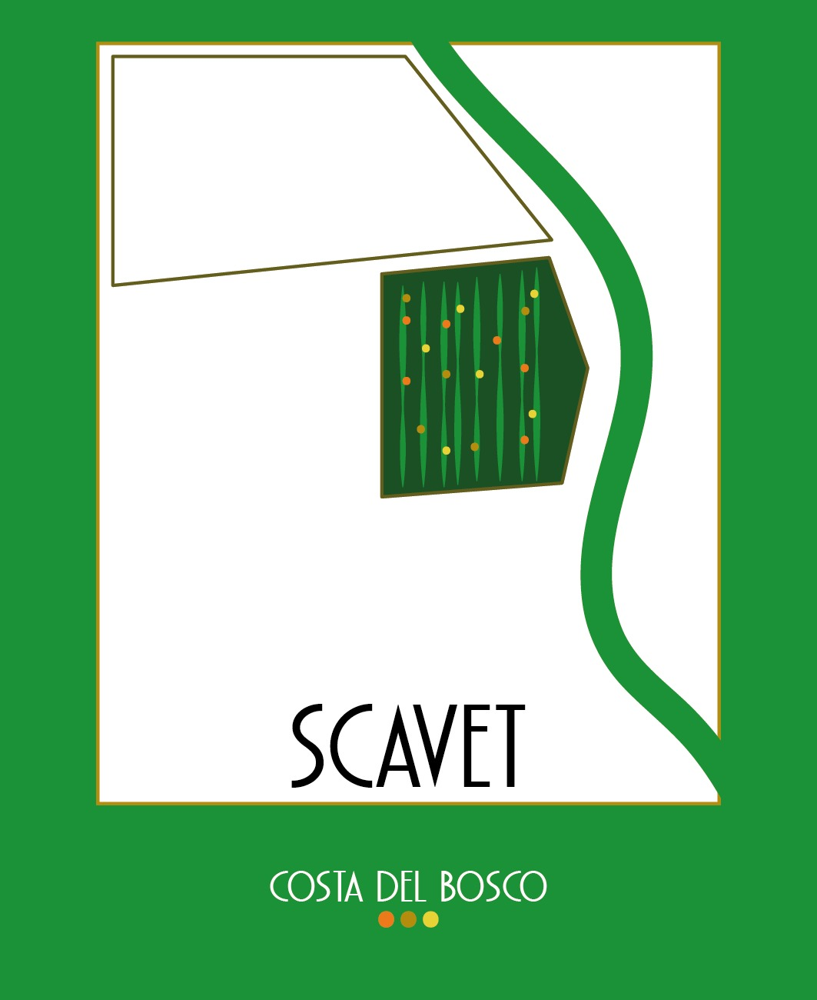

Colli Tortonesi
Costa Giuliana
Avolasca (AL)
La terra di nonno Natalino. Qui nasce Scavet, il nostro Cortese.
Foto di nonno Natalino
Oltrepò Pavese · Colli Tortonesi
Due fratelli, due aziende dei nonni, un nome solo. Vino e frutta, poco e con le mani.
Costa Giuliana + Bosco Madio = Costa del Bosco
Un nome fatto di due terre: quella di nonno Natalino e quella di nonno Luciano.
Chi siamo
C'erano due aziende agricole, su due colline diverse. Nonno Natalino a Costa Giuliana, ad Avolasca sui Colli Tortonesi. Nonno Luciano a Bosco Madio, a Torricella Verzate nell'Oltrepò Pavese. Hanno lavorato la terra per una vita: vigne, frutteti, stagioni.
Oggi quelle due terre hanno un nome solo. Siamo Matteo e Sara, fratello e sorella, 28 e 23 anni. Abbiamo unito le due aziende e le abbiamo chiamate Costa del Bosco: un pezzo di ciascuna.
Lavoriamo vigneti di nostra proprietà tra Oltrepò Pavese e Colli Tortonesi. Coltiviamo frutta e facciamo vino, poco e con le mani. Il primo si chiama Scavet, come la vigna da cui nasce.
Custodire le terre dei nostri nonni e trasformarle in vini e frutta che raccontano il loro posto.
Vogliamo far conoscere i Colli Tortonesi e l'Oltrepò attraverso una nuova generazione di vignaioli, che rispetta la tradizione senza ripeterla.
Le terre
Colli Tortonesi
Avolasca (AL)
La terra di nonno Natalino. Qui nasce Scavet, il nostro Cortese.
Oltrepò Pavese
Torricella Verzate (PV)
La terra di nonno Luciano: vigne e frutteti sulle colline dell'Oltrepò.
Ettari totali di vigneto: [da completare]

Il primo vino
Colli Tortonesi Cortese DOC · Secco · 2025
In dialetto, scavet è un piccolo scasso. È la vigna che nostro nonno ha preparato con l'aratro, senza scavatore, su un fazzoletto di terra. Oggi la vendemmiamo noi, a mano. Cortese, 980 bottiglie: il nostro primo vino.
Analisi del Laboratorio del Consorzio per la tutela dell'Asti, giugno 2026. Idoneità DOC Valoritalia del 18 giugno 2026.
Ogni nostro vino porterà il nome della sua vigna.
Valori
Lavoriamo terre di famiglia, non comprate.
Vigneti di proprietà, ereditati dai nonni.
Due terre e due fratelli diventano una cosa sola.
Il nome Costa del Bosco.
Poco, fatto bene, fatto da noi.
Vendemmia a mano, 980 bottiglie di Scavet.
Una generazione giovane, un linguaggio contemporaneo.
Matteo, 28 anni. Sara, 23.
Non solo vino
Coltiviamo anche frutta, come facevano i nonni: [quali frutti]. [In vendita diretta in azienda? Stagionalità?]
Contatti
Cerchi piccoli produttori da raccontare? Ti mandiamo scheda tecnica e listino.
Chiedi il listinoVino e frutta in azienda, su appuntamento. Chiamaci prima di passare.
Chiama